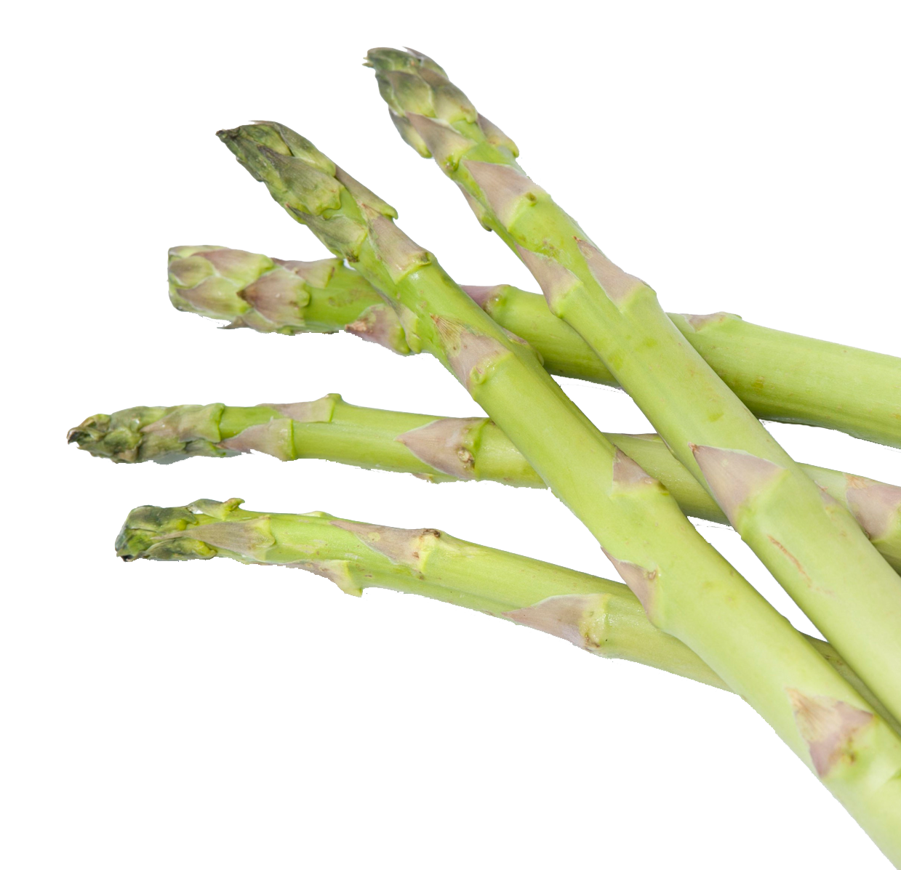
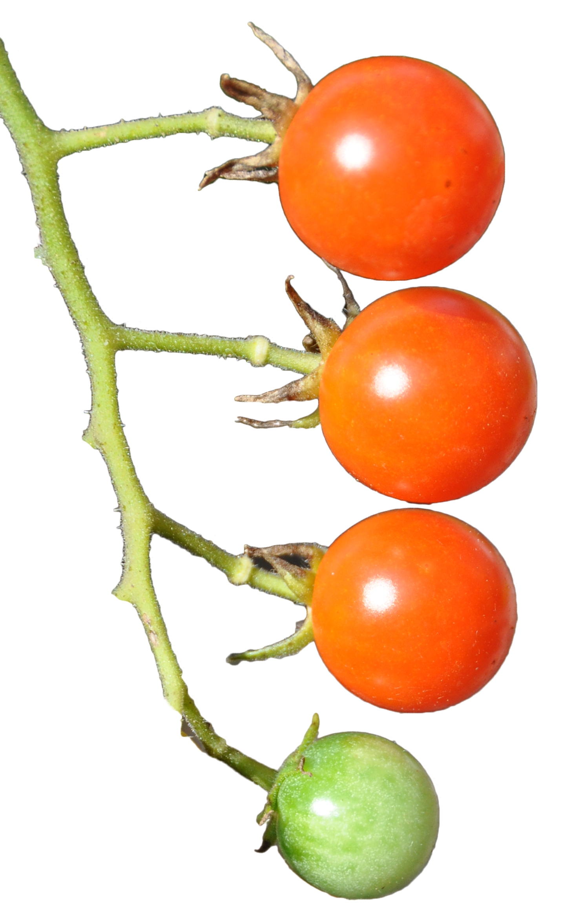
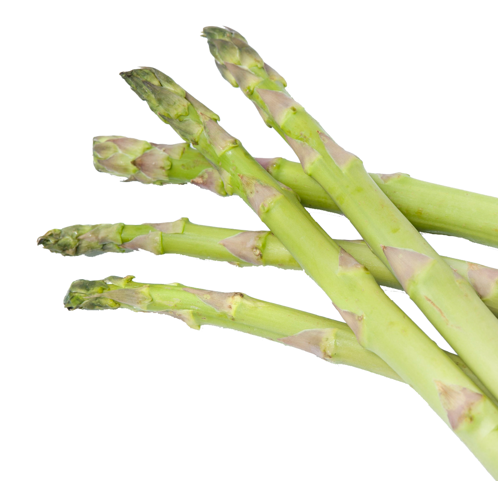
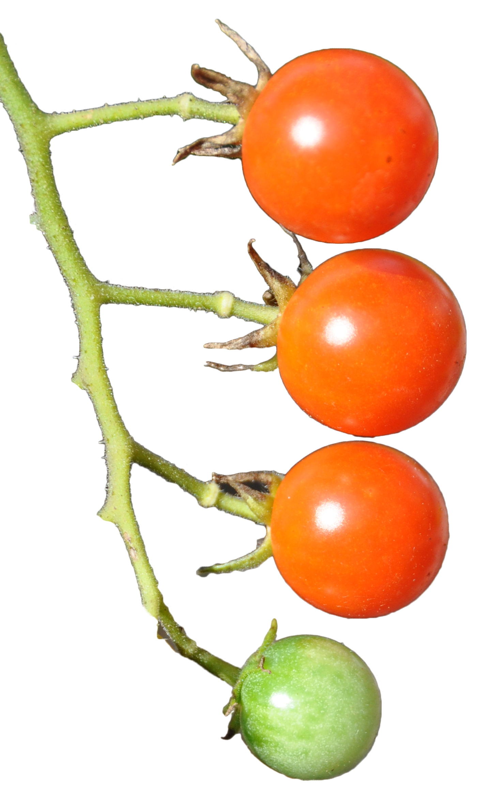

Why you should make your own bread
Today, people hardly ever bake their own bread. This is a shame. Bread is so readily available at the grocery store, and there are so many choices, that people don't even think twice about picking up a loaf on every trip to the grocery store. However, if you do this, and never make your own bread, you are missing out. There are a lot of reasons that homemade bread is better than store bought. Here are a few:
- Cheaper: An initial investment in flour and yeast will make you a bunch of bread, and the price works out to be significantly less than store-bought
- Healthier: Bread should only contain flour/grains, oil, sugar, salt, yeast and water. Most store-bought breads contain many more ingredients than this.
- Freshness: There is nothing like eating a fresh slice of bread right off the loaf. Even if you keep the bread for a week before finishing the loaf, chances are it is fresher than any store-bought bread, which was probably made weeks before you bought it.
- Taste: There is a distinct difference between homemade and store-bought bread. You have to taste it to understand. Trust me.
- Smell: Nothing makes your house smell better than baking fresh bread. The yeast gives the house a wonderful smell that just makes you feel warm and cozy inside.
You can either make bread with a bread maker, or knead it by hand. Though a bread maker is less work, I believe everyone should knead their own bread at least once. It is satisfying to eat a slice of bread knowing you did all the work by hand, and kneading bread is also a great stress reliever. Baking bread is a great activity for a Saturday or Sunday afternoon, and then you have a fresh loaf to use for toast or sandwiches all week. (P.S.- If you are looking to make a delicious sandwich, consider spreading some hummus on your homemade bread).